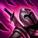
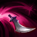
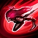
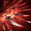

Pasiva: Voracidad

Cuando muere un campeón que haya recibido daño de Katarina en los últimos segundos, el enfriamiento de sus habilidades se reduce drásticamente. Si Katarina recoge una daga, la usa para acuchillar a todos los enemigos cercanos, lo que inflige daño mágico.
Q: Hoja rebotante

Katarina lanza al objetivo una daga que rebota hacia los enemigos cercanos antes de caer al suelo.
W: Preparación
Katarina obtiene un aumento de velocidad de movimiento y lanza una daga al aire encima de ella..
E: Shunpo

Katarina aparece junto al objetivo. Lo golpea si es un enemigo o, de lo contrario, golpea al enemigo más cercano.
R: Loto Mortal

Katarina despide una ráfaga de hojas e inflige gran cantidad de daño mágico a los 3 campeones enemigos más cercanos.